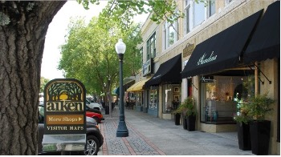

Upcoming Events
- December 22, 2021 - Last day to donate to the Aiken Christmas Aid Fund.
- December 24, 2021 - Office closed in observance of Christmas Day.
- December 31, 2021 - Office closed in observance of New Years Day.
- January 4, 2022 - New Businesses Orientation/Welcome Dinner.
Our Mission
Our experienced board is dedicated to providing events, education, advertising and networking opportunities to support your business. No matter how large or small, we want to see your business thriving in Aiken!
Become a member today!
Join our supportive network of partners. We are here to grow together!
Contact Us
Aiken Chamber of Commerce
121 Richland Ave. E | Aiken, SC 29801
PO Box 892 | Aiken, SC 29802
Phone: (803) 641.1111 | chamber@aikenchamber.net
Aiken businesses in the news
Aiken businesses welcome new growth
(WRDW) By Nick Proto
Aiken city officials are committed to growth in the area, and local
business owners are excited for what that means for their businesses.
"I'm pumped," said Alley Kneece, owner of Alley Downtown Taproom. "I think the more the merrier."
Kneece opened the Alley Downtown Taproom in March 2017. "It was very quiet. There wasn't a lot of
traffic," she said. "There wasn't a buzz around the town about downtown Aiken."
But a lot has changed since then, and a lot more change is on the way.
"Having growth is very good," said Van Smith, owner of Lionel Smith Limited. "If you're standing
still, you're going backwards." Smith was born and raised in Aiken, and took over the family
business in 1992. He's also on the board for the Aiken Downtown Development Association. While
some people may not want change, he said the city needs it.
"I think that you have a healthy city with some change," he said. "You want to keep the people
you have, but you definitely want some change."
More people means more businesses coming downtown. Instead of seeing competition, Kneece sees
a partnership.
"If there was only just me downtown, then no one would come downtown," she said. "Most people
don't go to the same spot every single day. You need more."